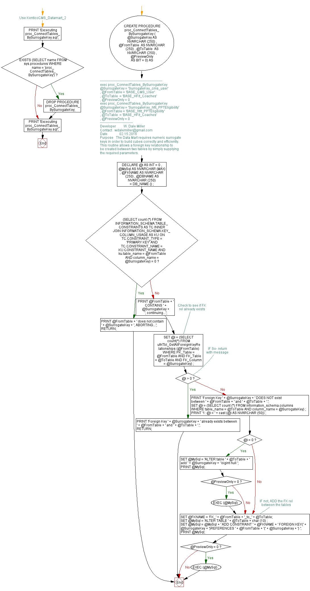

<a href="proc_ConnectTables_BySurrogateKey.png"></a>
-- Use KenticoCMS_Datamart_2 GO PRINT 'Excecuting proc_ConnectTables_BySurrogateKey.sql'; GO IF EXISTS (SELECT name FROM sys.procedures WHERE name = 'proc_ConnectTables_BySurrogateKey') BEGIN DROP PROCEDURE proc_ConnectTables_BySurrogateKey; END; GO /*------------------------------------------------------- exec proc_ConnectTables_BySurrogateKey @SurrogateKey = 'SurrogateKey_cms_user' , @FromTable = 'BASE_CMS_User' , @ToTable = 'BASE_HFit_Coaches' , @PreviewOnly = 0 exec proc_ConnectTables_BySurrogateKey @SurrogateKey = 'SurrogateKey_hfit_PPTEligibility' , @FromTable = 'BASE_hfit_PPTEligibility' , @ToTable = 'BASE_HFit_Coaches' , @PreviewOnly = 0 */ CREATE PROCEDURE proc_ConnectTables_BySurrogateKey ( @SurrogateKey AS NVARCHAR (250) , @FromTable AS NVARCHAR (250) , @ToTable AS NVARCHAR (250) , @PreviewOnly AS BIT = 0) AS BEGIN /*----------------------------- Developer W. Dale Miller Contact wdalemiller@gmail.com Date 02.15.2016 Purpose The Data Mart requires numeric surrogate keys in order to build cubes correctly and efficiently. This routine allows a foreign key relationship to be created between two tables by simply supplying the required parameters. */ DECLARE @i AS INT = 0 , @MySql AS NVARCHAR (MAX) , @FKNAME AS NVARCHAR (250) , @DBNAME AS NVARCHAR (250) = DB_NAME () ; IF (SELECT count (*) FROM INFORMATION_SCHEMA.TABLE_CONSTRAINTS AS TC INNER JOIN INFORMATION_SCHEMA.KEY_COLUMN_USAGE AS KU ON TC.CONSTRAINT_TYPE = 'PRIMARY KEY' AND TC.CONSTRAINT_NAME = KU.CONSTRAINT_NAME AND ku.table_name = @FromTable AND column_name = @SurrogateKey) = 0 BEGIN PRINT @FromTable + ' does not contain ' + @SurrogateKey + ', ABORTING...'; RETURN; END else PRINT @FromTable + ' CONTAINS ' + @SurrogateKey + ', continuing...'; --Check to see if FK rel already exists SET @i = (SELECT count(*) FROM ufnTbl_GetAllForeignKeyRelationships (@FromTable) WHERE PK_Table = @FromTable AND FK_Table = @ToTable AND FK_Column = @SurrogateKey) ; -- IF So- return with message IF @i > 0 BEGIN PRINT 'Foreign Key ' + @SurrogateKey + ' already exists between ' + @FromTable + ' and ' + @ToTable + '.'; RETURN; END; else PRINT 'Foreign Key ' + @SurrogateKey + ' DOES NOT exist between ' + @FromTable + ' and ' + @ToTable + '.'; SET @i = (SELECT count (*) FROM information_schema.columns WHERE table_name = @ToTable AND column_name = @SurrogateKey) ; PRINT '1: @i = ' + cast (@i AS NVARCHAR (50)) ; IF @i = 0 BEGIN SET @MySql = 'ALTER table ' + @ToTable + ' add ' + @SurrogateKey + ' bigint null '; PRINT @MySql; IF @PreviewOnly = 0 BEGIN EXEC (@MySql) ; END; END; --IF not, ADD the FK rel between the tables SET @FKNAME = 'FK_' + @FromTable + '_to_' + @ToTable; SET @MySql = 'ALTER TABLE ' + @ToTable + char (10) ; SET @MySql = @MySql + ' ADD CONSTRAINT ' + @FKNAME + ' FOREIGN KEY(' + @SurrogateKey + ')REFERENCES ' + @FromTable + '(' + @SurrogateKey + ') '; PRINT @MySql; IF @PreviewOnly = 0 BEGIN EXEC (@MySql) ; END; END; GO PRINT 'Excecuting proc_ConnectTables_BySurrogateKey.sql'; GO
Hide code
Visustin flow chart for T-SQL